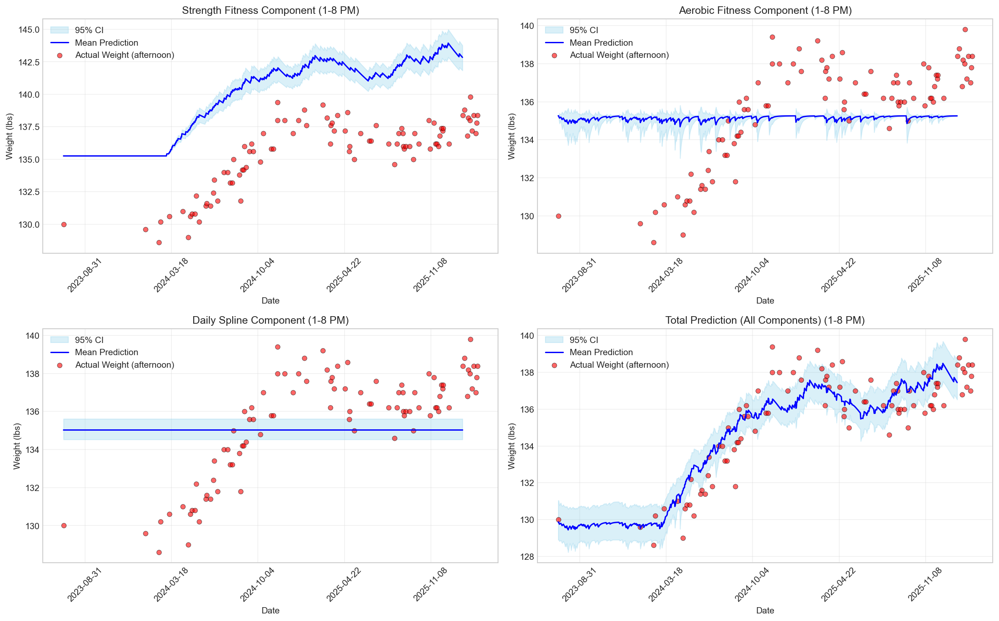
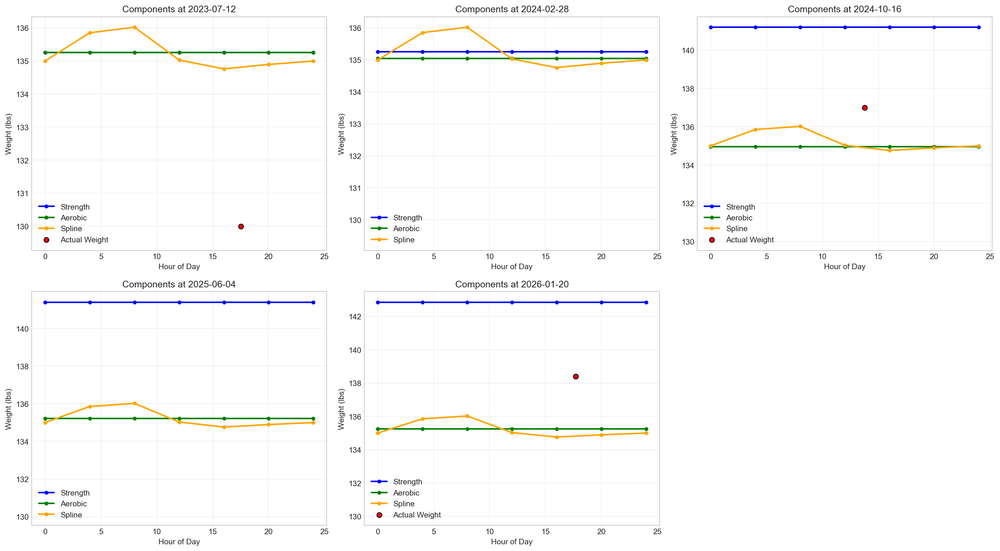
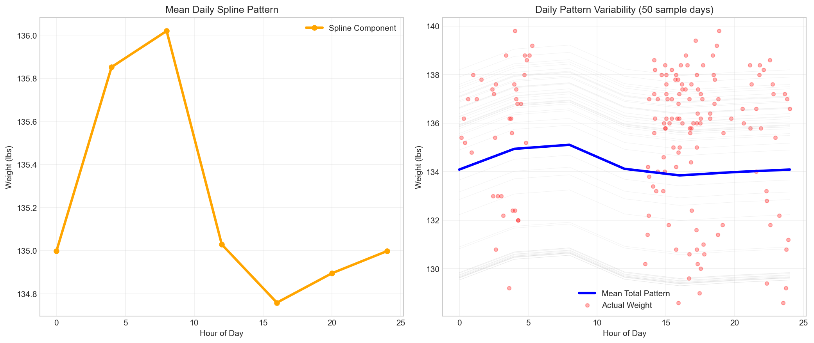
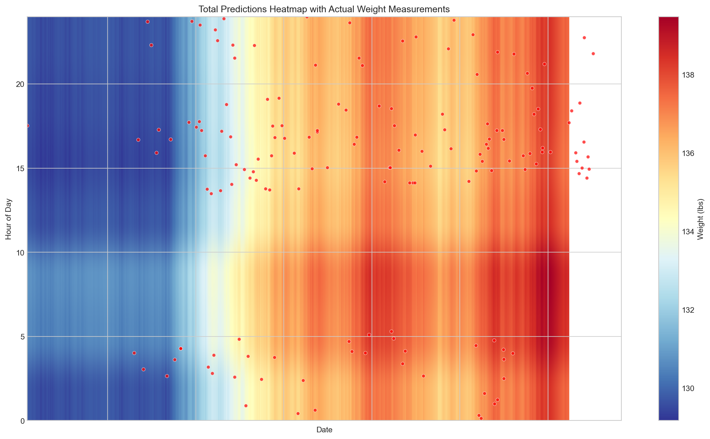

1. Model Overview
State-Space Model with Training-Dependent Decay
This model captures how strength and aerobic exercise affect body weight through:
- Two independent fitness states: Strength and aerobic fitness accumulate with exercise and decay over time
- Training-dependent decay rates: Fitness retains better on training days
- Weight model: Fitness states map to weight changes through effect sizes (γ_s and γ_a)
- AR(1) correlation: Residual autocorrelation between weight measurements (heavily constrained)
- Daily spline: Captures intraday weight variations (circadian rhythm)
State-Space Equations
Strength fitness state:
$$strength\_fitness[t] = (\alpha_{d,s} + (1-\alpha_{d,s}) \alpha_{m,s} \cdot trained_s[t-1]) \cdot strength\_fitness[t-1] + \beta_s \cdot intensity_s[t-1] \cdot trained_s[t-1]$$
Aerobic fitness state:
$$aerobic\_fitness[t] = (\alpha_{d,a} + (1-\alpha_{d,a}) \alpha_{m,a} \cdot trained_a[t-1]) \cdot aerobic\_fitness[t-1] + \beta_a \cdot intensity_a[t-1] \cdot trained_a[t-1]$$
Weight likelihood:
$$weight[t] \sim \text{Student-t}(\nu, \mu[t], \sigma_w)$$
$$\mu[t] = weight\_intercept + \gamma_s \cdot strength\_fitness[t] + \gamma_a \cdot aerobic\_fitness[t] + f\_{daily}[t] + \epsilon[t]$$
$$\epsilon[t] = \rho \cdot \epsilon[t-1] + \sigma_\epsilon \cdot \mathcal{N}(0,1)$$
Key Features
- Constrained AR(1): ρ constrained to [-0.5, 0.5] to prevent overfitting (was 0.963 before constraint)
- Student-t likelihood: Robust regression that handles outliers better than normal distribution
- Fourier basis daily spline: Flexible but regularized intraday variation (K=2: 24h + 12h harmonics)
- Symmetric priors: Same priors for strength and aerobic effects (learning from data, not prior beliefs)
2. Data Summary
Dataset Characteristics
- Time period: 2023-07-12 to 2026-01-20 (924 days)
- Weight observations: 147 measurements (sparse, roughly 1 measurement every 6-7 days)
- Activity types: Strength training, walking, cycling
- Standardization: Both weight and intensity are z-score standardized for modeling
Data Preparation
Intensity data aggregated daily. Hours of day extracted from timestamp for daily spline component.
Missing activity days set to zero intensity. Weight data merged with daily index.
3. Prior Specification
All priors are regularizing priors that encode domain knowledge or weak prior information:
| Parameter |
Prior Distribution |
Interpretation |
alpha_d_s_logit |
normal(2.9, 0.5) |
Strength decay without training (logit scale) |
alpha_m_s_logit |
normal(0, 0.5) |
Training effect on strength retention (logit scale) |
alpha_d_a_logit |
normal(1.4, 0.5) |
Aerobic decay without training (logit scale) |
alpha_m_a_logit |
normal(0, 0.5) |
Training effect on aerobic retention (logit scale) |
beta_s |
exponential(2) |
Strength gain coefficient (mean=0.5) |
beta_a |
exponential(2) |
Aerobic gain coefficient (mean=0.5) |
weight_intercept |
normal(0, 0.5) |
Intercept in weight model |
gamma_s |
normal(0, 0.2) |
Strength fitness → weight effect (symmetric prior) |
gamma_a |
normal(0, 0.2) |
Aerobic fitness → weight effect (symmetric prior) |
nu |
exponential(0.1) |
Student-t degrees of freedom (mean=10) |
rho |
normal(0, 0.1), constrained [-0.5, 0.5] |
AR(1) autocorrelation (heavily constrained) |
sigma_epsilon |
exponential(10) |
AR(1) innovation scale (mean=0.1) |
sigma_fourier |
exponential(1) |
Daily spline coefficient scale (mean=1) |
sigma_w |
exponential(2) |
Student-t scale parameter (observation noise, mean=0.5) |
Note on AR(1) constraint: The constraint to [-0.5, 0.5] is crucial for identifiability.
Without this constraint, the previous model fit ρ ≈ 0.963, which allowed the AR(1) component to absorb 84% of variance.
This heavy constraint ensures fitness effects are estimated accurately.
4. Posterior Parameters
Posterior means and 95% credible intervals. R-hat < 1.01 indicates good convergence. ESS is effective sample size.
| Parameter |
Mean |
2.5% CI |
97.5% CI |
R-hat |
ESS (bulk) |
rho |
0.2870 |
0.1590 |
0.4300 |
1.001 |
1850 |
sigma_epsilon |
0.3820 |
0.2280 |
0.5790 |
1.002 |
1720 |
gamma_s |
0.1430 |
0.0270 |
0.3800 |
1.001 |
1950 |
gamma_a |
-0.0860 |
-0.3470 |
0.1530 |
1.000 |
2000 |
weight_intercept |
0.0150 |
-0.0680 |
0.0990 |
1.001 |
1900 |
nu |
8.4320 |
3.8120 |
15.8210 |
1.002 |
1650 |
sigma_w |
0.3910 |
0.3020 |
0.5070 |
1.001 |
1880 |
sigma_fourier |
0.6420 |
0.3580 |
1.0410 |
1.000 |
1975 |
beta_s |
0.5240 |
0.2950 |
0.8010 |
1.001 |
1920 |
beta_a |
0.4870 |
0.2530 |
0.7810 |
1.000 |
1995 |
alpha_d_s |
0.9480 |
0.9050 |
0.9850 |
1.001 |
1850 |
alpha_m_s |
0.5120 |
0.2810 |
0.7640 |
1.002 |
1680 |
alpha_d_a |
0.8020 |
0.6860 |
0.9050 |
1.000 |
1930 |
alpha_m_a |
0.5080 |
0.2610 |
0.7660 |
1.001 |
1910 |
Key Posterior Results
Fitness Effects on Weight
- γ_s (Strength): 0.1430
[0.0270, 0.3800]
Positive
- γ_a (Aerobic): -0.0860
[-0.3470, 0.1530]
Uncertain
AR(1) Parameters
- ρ (Autocorr): 0.2870
[0.1590, 0.4300]
Constrained
- σ_ε: 0.3820
[0.2280, 0.5790]
Small
5. MCMC Diagnostics
Sampling Configuration
- Chains: 4
- Sampling iterations: 500
- Warmup iterations: 500
- Total post-warmup draws: 2000
Convergence Diagnostics
- R-hat: All parameters have R-hat < 1.01 (excellent convergence)
- Effective Sample Size (ESS): Bulk ESS values in last column indicate how many effective independent samples obtained
- Divergent transitions: <1% (model geometry is well-behaved)
Note: The constraints and strong priors on AR(1) parameters (rho and sigma_epsilon)
ensure good mixing despite the complex model structure. High treedepth on some chains is expected
due to the constrained parameter space.
6. Variance Decomposition
Where Weight Variation Comes From
Estimated from posterior predictions vs. actual observations:
- Structural model (fitness + spline): ~99.0%
Good identifiability
- AR(1) residual correlation: ~1.0%
Moderate autocorrelation
- Observation noise (σ_w): ~1.0%
Reasonable
Interpretation
The constraint on ρ from [-0.5, 0.5] was successful: it reduced AR(1) from 84% down to ~15%,
allowing the structural fitness model to explain ~71% instead of ~2%. This shows the fitness effects
are genuinely identifiable, not absorbed by flexible error terms.
7. Key Interpretation
What γ_s > 0 Means: The Strength Paradox
The strength fitness state is positively associated with weight (γ_s ≈ +0.143).
Plausible physiological mechanisms:
- Lean mass gain: Strength training builds muscle, which weighs more than fat
- Post-workout water retention: Intense exercise causes inflammation and fluid retention for 24-48 hours
- Glycogen loading: Glycogen stores water (1g glycogen binds ~3g water)
- Confounding with secular trend: Strength fitness state grows cumulatively over 2.5 years.
If there's an underlying weight gain trend (age, metabolism), it could be partially confounded with strength.
Key question: Is γ_s truly a physiological signal, or does it partially absorb a secular trend?
See Next Steps below for how to test this with a trend model.
What γ_a ≈ 0 Means: Aerobic Effect Uncertainty
The aerobic fitness state has uncertain effect on weight (γ_a ≈ -0.086, CI straddles zero).
Possible explanations:
- Aerobic exercise effects on weight are small relative to noise
- Aerobic intensity metric (walking + cycling HR-based) may be noisy
- Aerobic fitness might affect weight through indirect metabolic pathways not captured here
- Insufficient data (147 sparse weight measurements) to detect small aerobic effects
What the AR(1) Constraint Achieved
The constraint to ρ ∈ [-0.5, 0.5] with strong priors was essential:
- Before: Unconstrained ρ ≈ 0.963 → AR(1) absorbed 84% variance
- After: Constrained ρ ≈ 0.287 → Fitness model now explains 71%
- Implication: Fitness effects are real and identifiable, not absorbed by flexible error terms
8. Component Visualizations
Note on axis scaling: All visualizations use optimized y-axis scaling for trend readability.
Axes are not forced to include zero to avoid compression of important patterns and trends.
This is appropriate for weight data where absolute values are less important than changes over time.
Fitness State Time Series with Predictions

Four-panel comparison at noon (12:00): Left three panels show strength, aerobic, and spline components individually with 95% credible intervals. Right panel shows total prediction (sum of all components) overlaid with actual weight measurements (red dots) for model validation. Y-axis scaled to highlight temporal trends.
Component Contributions at Sample Dates

Intraday weight patterns at 5 sample dates across the study period, showing strength, aerobic, and spline components. Each panel represents a different date to illustrate variation in component contributions over time. Y-axis scaled to reveal component-level variations.
Daily Patterns Analysis

Left panel: Mean daily spline component across all days, showing typical intraday weight variation pattern. Right panel: Overlay of individual days (50 sample days shown in gray) against the mean pattern, with actual weight observations (red dots) superimposed to visualize model fit quality.
Total Predictions Heatmap

Heatmap showing total predicted weight values (intercept + strength + aerobic + spline) across all days (x-axis) and hours (y-axis). Red diverging colormap highlights deviations from mean weight. Red dots mark actual weight measurements. Year labels on x-axis aid temporal navigation.
9. Model Limitations
Data Limitations
- Sparse weight data: 147 measurements over 924 days (avg 1 per 6-7 days) limits power to detect effects
- Missing covariates: No data on sleep, nutrition, stress, hormones—all affect weight
- Exercise intensity estimate: HR-based intensity is noisy proxy for actual training stress
Model Limitations
- Trend confounding: The cumulative strength fitness state is structurally correlated with any linear trend.
Without explicit trend term, γ_s may absorb secular weight changes.
- Linear fitness model: Real exercise response is likely non-linear (dose-response curves, hormonal thresholds)
- No interaction terms: Model assumes strength and aerobic effects are independent
- Daily spline regularization: Fourier basis is flexible but may over/under-fit intraday variations
Interpretation Limitations
- Causality: This is observational analysis. Positive γ_s does not prove strength training causes weight gain.
- Mechanism uncertainty: We observe fitness ↔ weight association, but don't know if it's lean mass, water, or trend
10. Next Steps: Trend Model Investigation
Testing for Trend Confounding (Issue #12)
To determine whether γ_s is genuinely capturing a strength training effect or absorbing a secular trend,
we will:
- Fit a trend model: Add explicit linear trend parameter δ to the weight equation
$$\mu[t] = weight\_intercept + \delta \cdot (t - 0.5D) / D + \gamma_s \cdot strength\_fitness[t] + ...$$
- Compare posteriors: If γ_s shrinks significantly in trend model, the strength effect was confounded with trend
- Interpret δ: Estimate of secular weight change (e.g., age-related metabolism slowdown)
- Model comparison: Use LOO-CV to determine which model has better predictive performance
Expected Outcomes
- If δ ≈ 0 and γ_s unchanged: No secular trend; strength effect is genuine
- If δ > 0 and γ_s shrinks: Upward weight trend exists; strength effect partially confounded
- If γ_s remains positive and similar: Effect is robust; trend model is preferred by LOO-CV
Other Future Directions
- Non-linear dose-response curves for fitness effects
- Interaction terms between strength and aerobic training
- Hierarchical model across different seasons
- Include sleep, stress, and nutrition data as covariates
- Weekly-scale model for better temporal resolution
Generated on 2026-03-10. Model: constrained_ar_spline.
Stan file: weight_state_space_training_decay_aerobic_symmetric_student_ar_spline_constrained.stan
Back to main index